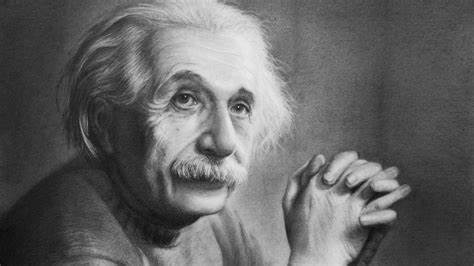

NEWPOST WORK
by Johann Wolfgang Von Coethe
The German philospher Arthur Schopenhsues named wilhielm Meister's Apprenticeship one of the four greatest novels ever written , while the Amerrican philospher and essayist Ralph waldo Emersonm selected goeth as one of six "representative men " in his work of same name (along with palto , emuanue Swedemborg ,Montaigue,Napoleon and Shakespear ) Goethe's comments and observations from the basis of serval biographical work notably
The Crowd Seemed to Grow
The Arthur Schopenhamer named Wilhelm Meister's Apprentioeship one of the four greatest novels ever Written.

Goethe's comments and bservation from the basis of several biographical works , nobely Johann Peter Eckermann's Conversation with Goethe(1836) his poems Were set music by many composers including Mozart ,Beethoven ,Schubert,Berlinz,Lizat Wagner, and Mahler life Goethe'comments and observatio from the basis of several biographical works , notably Johan Peter Eckermann;s conversation with Goethe
let go your counscious self and act on instinct
NEW DELHI: Union home minister Amit Shah on Thursday, in his first public response to the Pahalgam terror attack, delivered a stern warning to those behind the killing of 26 civilians in Kashmir. Reflecting the government’s tough stance, Shah said, “Whoever carried out dastardly attack in Pahalgam will not be spared,” adding, “Har vyakti ko chun chun ke jawab bhi milega, jawab bhi diya jayega.
A thousand unlnown planet
In the vast expanse of the universe, a thousand unknown planets drift silently through the cosmic abyss, each holding secrets yet to be uncovered. Some are shrouded in swirling storms, their atmospheres thick with gases never seen on Earth. Others bask in the light of distant, dying stars, their landscapes frozen in time. Alien oceans ripple under unfamiliar moons, while mountains of crystal stretch towards violet skies. The life that may exist on these worlds is beyond human imagination—bioluminescent  creatures thriving in toxic air, forests of metal swaying under gravity unlike our own. Every planet tells a story, waiting for explorers to chart their mysteries and redefine the boundaries of what is known.
Thr Crowd Seemed To Grow
The crowd seemed to grow, swelling with energy as more people gathered. Voices merged into a rhythmic hum, punctuated by bursts of laughter and animated conversations. Excitement rippled through the air, the anticipation building with each passing moment. Strangers became companions, drawn together by a shared experience. The atmosphere buzzed with movement—shuffling feet, waving hands, eager glances searching for something just beyond the horizon. As the gathering expanded, the space seemed to shrink, filled with the electric charge of expectation and the undeniable force of collective presence.